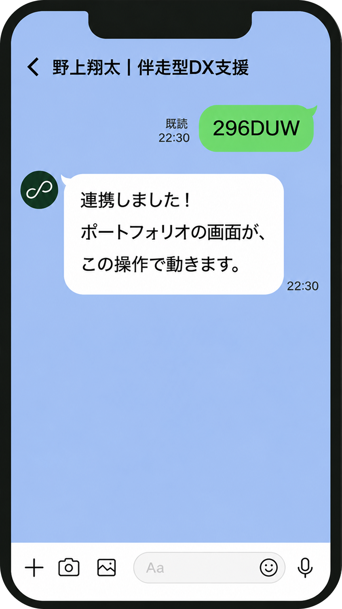
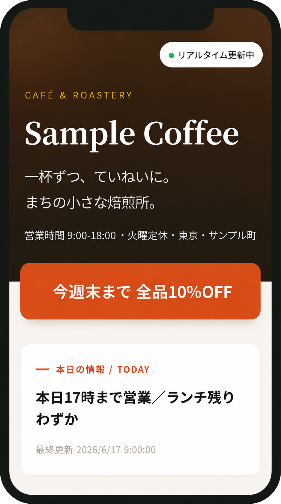
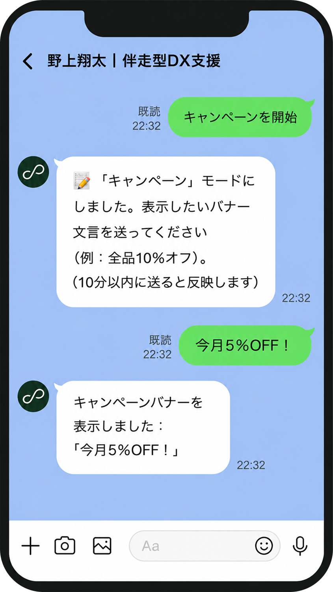
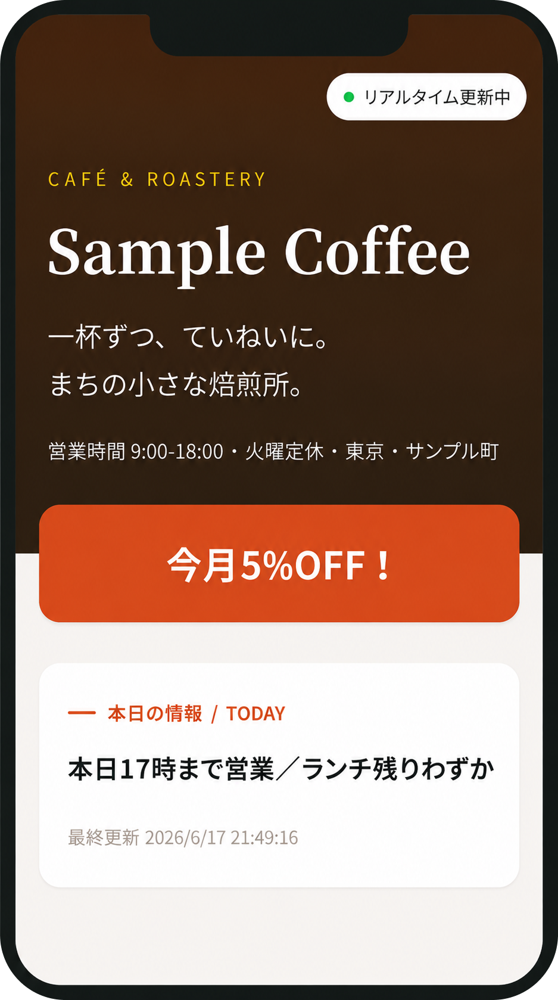
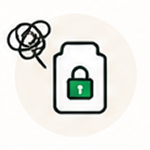
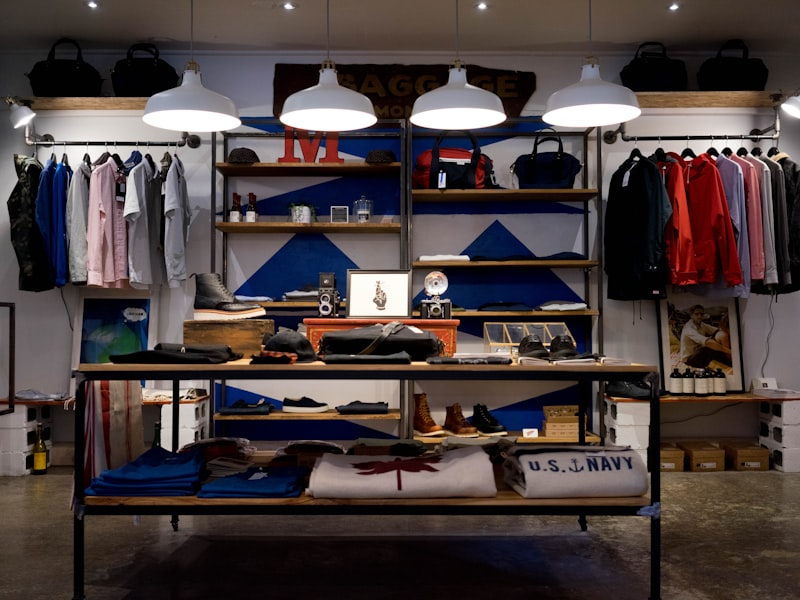
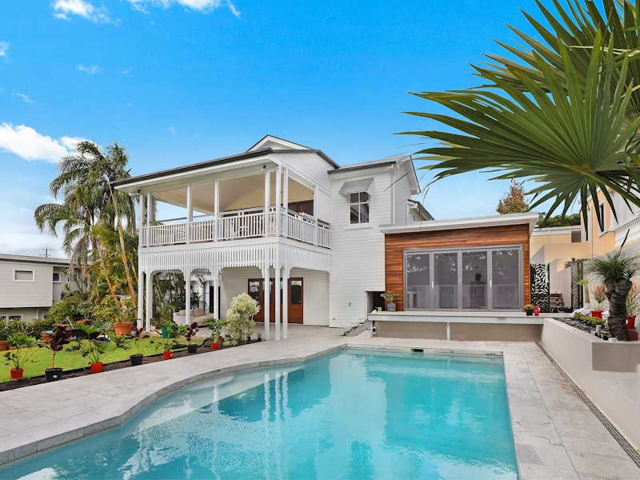
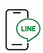
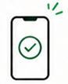

LINEで、
ホームページ更新
「本日のおすすめ」「お知らせ」「キャンペーン」などの
ホームページを、スマホのLINEから簡単に更新できます。
専用アプリも、管理画面のログインも、パソコンも必要ありません。
LINEを送るだけで、
ホームページがリアルタイムに更新されます
連携すると、あなたのLINEからメッセージを送るだけで、デモサイトの内容がすぐに反映されます。
連携コードをLINEに送信します。

連携コードを送信
デモサイトとLINEがつながります。

連携後、リアルタイム更新中に変わります。
更新したい内容をLINEで送ります。

例)「今月5%OFF！」と送信
送った内容がすぐにサイトに反映されます。

数秒〜数十秒でサイトに反映されます。
こんなお悩み、ありませんか？

更新したいけど
ログインが面倒
IDやパスワードを探すのが手間で後回しに…
パソコンがないと
更新できない
スマホだけでサクッと更新したい…
更新方法が
わからない
操作が複雑で、更新を頼める人がいない…
タイムリーな
情報発信ができない
キャンペーンやお知らせをすぐに出したい…
制作会社に
依頼している
ちょっとした更新でも費用がかかる…
だから、LINEで完結。
いつでも、どこでも、だれでも簡単に。最新の情報を届け。
LINEで送るだけ
専用アプリも、ログインも不要。
思いついたらすぐに情報を更新。
リアルタイムに反映
送信した内容がすぐにサイトに反映。
最新情報を素早く届けられます。
スマホ1つで完結
スマホだけで、文章も画像も送信可能。
すべてLINE上で完結します。
様々な業種でご利用いただけます
飲食店・美容室・クリニックなど、あらゆる業種の情報発信をもっと簡単に。
飲食店・カフェ
日替わりメニューや営業時間の変更もすぐに更新。
美容室・サロン
キャンペーンや空き状況をスピーディーに配信。

小売・物販
新商品や入荷情報を手軽にお知らせ。

病院・クリニック
診療時間や休診情報をシンプルに共有。

スクール・教室
レッスンやイベント情報をタイムリーに配信。
不動産・施設
空室情報やイベント情報をすぐにお知らせ。

LINEひとつで、
すべての情報発信を。
特別なスキルや知識は不要。
いつものLINEで、あなたのホームページを
かんたんに最新の状態に保てます。
専用アプリや管理画面の利用は一切不要です。
更新作業の手間を大幅に削減できます。
LINE公式の認証システムで安心してご利用いただけます。
最新情報を素早く届けて、機会損失を防ぎます。
導入はかんたん、最短3ステップ
専門知識や難しい設定は不要。すぐにLINE連携をはじめられます。

ご相談・ヒアリング
ご要望や運用方法をヒアリング。
最適なプランをご提案します。
アカウント発行・設定
専用アカウントを発行し、
LINEとホームページを連携。
初期設定はこちらでサポートします。

ご利用開始
その日からLINEで更新スタート！
すぐに最新情報を発信できます。
導入から運用まで、
しっかりサポートします
「何を送ればいいの？」「うまく反映されない…」そんな時も安心。
導入後も私が丁寧にフォローします。
よくあるご質問
デザインはカスタマイズできますか？
はい。更新できる場所を「お知らせ」「本日の情報」などの決まった枠に限定しているため、レイアウトを保ったまま中身だけを差し替えられます。デザイン自体もご要望に合わせてお作りします。
セキュリティは大丈夫ですか？
更新できる人を限定し、なりすましを防ぐ仕組み（署名検証）を実装しています。お店ごとにデータも分離しているため、他店の情報と混ざることはありません。
今あるホームページに組み込めますか？
はい。お知らせ枠などの部品を、既存のサイトに組み込む形で導入できます。新しくページをお作りすることも可能です。
管理画面のログインは必要ですか？
不要です。普段お使いのLINEから送るだけで更新できます。IDやパスワードの管理は一切ありません。
スタッフ追加はできますか？
できます。更新できる人を限定でき、権限の細かな管理も今後対応していきます。
もしLINEが使えなくなったら？
将来的にメール投稿など、LINE以外の更新手段も追加できるよう設計しています。特定のサービスに縛られすぎない構成です。